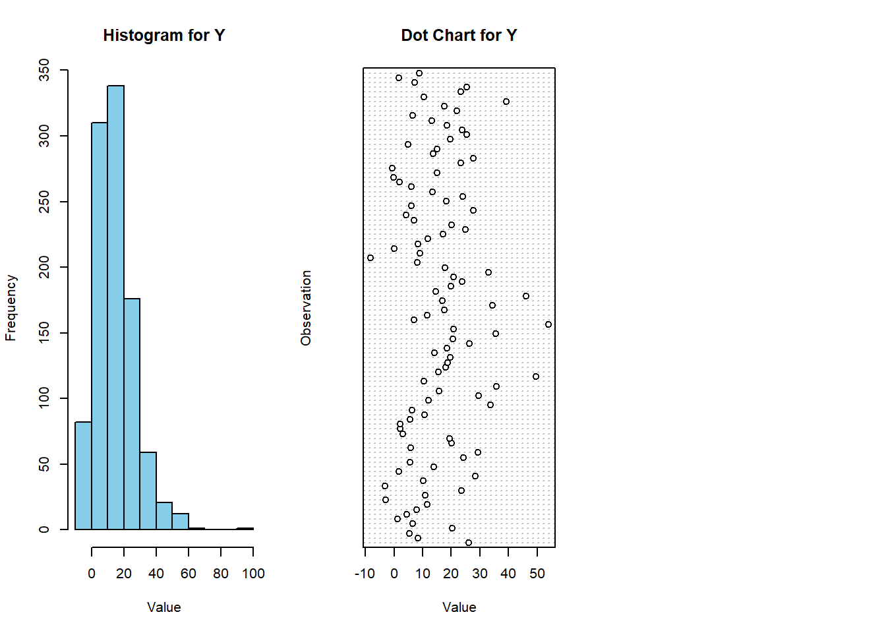

Chapter 5 Multi-Layer NN Model
This chapter presents the final functional-programming model. Uses functions to define ‘neural networks’, perform forward propagation, and perform gradient descent. Section at the end details future components that could be added in.
5.1 Generate Data
For now, having 3 inputs and combining them to create y, with a random error term. Would like to tweak the setup eventually.
## Warning: package 'tidyverse' was built under R version 4.2.3## Warning: package 'ggplot2' was built under R version 4.2.3## Warning: package 'tibble' was built under R version 4.2.3## Warning: package 'tidyr' was built under R version 4.2.3## Warning: package 'readr' was built under R version 4.2.3## Warning: package 'purrr' was built under R version 4.2.3## Warning: package 'dplyr' was built under R version 4.2.3## Warning: package 'stringr' was built under R version 4.2.3## Warning: package 'forcats' was built under R version 4.2.3## Warning: package 'lubridate' was built under R version 4.2.3## ── Attaching core tidyverse packages ──────────────────────── tidyverse 2.0.0 ──
## ✔ dplyr 1.1.3 ✔ readr 2.1.4
## ✔ forcats 1.0.0 ✔ stringr 1.5.0
## ✔ ggplot2 3.4.3 ✔ tibble 3.2.1
## ✔ lubridate 1.9.3 ✔ tidyr 1.3.0
## ✔ purrr 1.0.2
## ── Conflicts ────────────────────────────────────────── tidyverse_conflicts() ──
## ✖ dplyr::filter() masks stats::filter()
## ✖ dplyr::lag() masks stats::lag()
## ℹ Use the conflicted package (<http://conflicted.r-lib.org/>) to force all conflicts to become errors## create data:
m <- 1000
n_1_manual <- 3
n_L_manual <- 1
# initialize Xs
X <- data.frame(X1 = runif(n = m, min = -10, max = 10),
X2 = rnorm(n = m, mean = 0, sd = 10),
X3 = rexp(n = m, rate = 1)) %>%
as.matrix(nrow = m,
ncol = n_1_manual)
# get response
Y <- X[, 1] + 10 * sin(X[, 2])^2 + 10 * X[, 3] + rnorm(n = 1000)
# fix dims according to NN specs
X <- t(X)
Y <- t(Y)
# Create line chart for each variable
par(mfrow = c(1, 3)) # Set up plotting layout
for (i in 1:3) {
plot(X[i, ], type = "l", main = paste("Line Chart for", rownames(X)[i]),
xlab = "Observation", ylab = "Value")
}# Create histogram for each variable
par(mfrow = c(1, 3)) # Reset plotting layout
for (i in 1:3) {
hist(X[i, ], main = paste("Histogram for", rownames(X)[i]),
xlab = "Value", ylab = "Frequency", col = "skyblue", border = "black")
}# Create histogram for Y variable
hist(Y, main = "Histogram for Y", xlab = "Value", ylab = "Frequency", col = "skyblue", border = "black")
# Select a subset of Y values to display on the dot chart
subset_Y <- Y[seq(1, length(Y), by = 10)] # Adjust the 'by' value as needed to control the density
# Create dot chart for Y variable with subset of values
dotchart(subset_Y, main = "Dot Chart for Y", xlab = "Value", ylab = "Observation")
5.2 Functions
5.2.1 Link Functions
## Specify Link Functions & Derivatives
get_link <- function(type = "sigmoid") {
if (type == "identity") {
# identity
g <- function(x) {x}
} else if (type == "sigmoid") {
# sigmoid
g <- function(x) {1 / (1 + exp(-x))}
} else if (type == "softmax") {
# softmax
g <- function(x) {
exp_x <- exp(x - max(x)) # Subtracting max(x) for numerical stability
return(exp_x / sum(exp_x))
}
} else if (type == "relu") {
# ReLU
g <- function(x) {x * as.numeric(x > 0)}
} else (return(NULL))
return(g)
}
get_link_prime <- function(type = "sigmoid") {
if (type == "identity") {
# identity [FIX]
g_prime <- function(x) {rep(1, length(x))}
} else if (type == "sigmoid") {
# sigmoid
g_prime <- function(x) {exp(-x) / (1 + exp(-x))^2}
} else if (type == "softmax") {
# Derivative of softmax
g_prime <- function(x) {
s <- get_link("softmax")(x)
return(s * (1 - s))
}
} else if (type == "relu") {
# ReLU
g_prime <- function(x) {as.numeric(x > 0)}
} else (return(NULL))
return(g_prime)
}5.2.2 Loss Functions
## Specify Loss Functions & Derivatives
get_loss_function <- function(type = "squared_error") {
if (type == "squared_error") {
loss <- function(y_hat, y) {sum((y_hat - y)^2)}
} else if (type == "absolute_error") {
loss <- function(y_hat, y) {sum(abs(y_hat - y))}
} else if (type == "binary_cross_entropy") {
loss <- function(y_hat, y) {-(y * log(y_hat) + (1-y) * log(1 - y_hat))}
} else if (type == "categorical_cross_entropy") {
loss <- function(y_hat, y) {-sum(y * log(y_hat))}
} else (return(NULL))
return(loss)
}
get_loss_prime <- function(type = "squared_error") {
if (type == "squared_error") {
loss_prime <- function(y_hat, y) {sum(2 * (y_hat - y))}
} else if (type == "absolute_error") {
loss_prime <- function(y_hat, y) {sum(sign(y_hat - y))}
} else if (type == "binary_cross_entropy") {
loss_prime <- function(y_hat, y) {-((y / y_hat) - ((1 - y) / (1 - y_hat)))}
} else if (type == "categorical_cross_entropy") {
loss_prime <- function(y_hat, y) {-sum(y / y_hat)}
} else (return(NULL))
return(loss_prime)
}5.2.3 Misc Helpers
## creates a list of n empty lists
create_lists <- function(n) {
out <- list()
for (i in 1:n) {
out[[i]] <- list()
}
return(out)
}
## friendlier diag() function
diag_D <- function(x) {
if (length(x) == 1) {
out <- x
} else {
out <- diag(as.numeric(x))
}
return(out)
}
generate_layer_sizes <- function(X,
Y,
hidden_layer_sizes) {
return(c(nrow(X), hidden_layer_sizes, nrow(Y)))
}initialize_NN <- function(layer_sizes,
activation_function = "sigmoid",
last_activation_function = "identity",
lower_bound = 0,
upper_bound = 1) {
n <- layer_sizes
## initialize parameter matrices
W <- list()
b <- list()
## could vectorize w/ mapply()
for (l in 2:length(n)) {
W[[l]] <- matrix(data = runif(n = n[l - 1] * n[l],
min = lower_bound,
max = upper_bound),
nrow = n[l],
ncol = n[l - 1])
b[[l]] <- matrix(data = runif(n = n[l],
min = lower_bound,
max = upper_bound),
nrow = n[l],
ncol = 1)
}
## return
return(list(W = W,
b = b,
activation_function = activation_function,
last_activation_function = last_activation_function))
}5.2.4 Forward Propagation
NN_output <- function(X,
NN_obj) {
L <- length(NN_obj$W)
## if X is one obs, input will be a vector so dim will be null
m <- ifelse(is.null(ncol(X)),
1,
ncol(X))
g <- get_link(NN_obj$activation_function)
g_last <- get_link(NN_obj$last_activation_function)
a <- list()
a[[1]] <- X
for (l in 2:(L - 1)) {
a[[l]] <- g(NN_obj$W[[l]] %*% a[[l - 1]] + matrix(data = rep(x = NN_obj$b[[l]],
times = m),
ncol = m))
}
a[[L]] <- g_last(NN_obj$W[[L]] %*% a[[L - 1]] + matrix(data = rep(x = NN_obj$b[[L]],
times = m),
ncol = m))
return(a[[L]])
}5.2.5 Gradient Descent Iteration
GD_iter <- function(NN_obj,
X,
Y,
rho = 1,
verbose = FALSE,
very_verbose = FALSE) {
L <- length(NN_obj$W)
## if X is one obs, input will be a vector so dim will be null
m <- ifelse(is.null(ncol(X)),
1,
ncol(X))
## get links
g <- get_link(NN_obj$activation_function)
g_prime <- get_link_prime(NN_obj$activation_function)
g_last <- get_link(NN_obj$last_activation_function)
g_last_prime <- get_link_prime(NN_obj$last_activation_function)
z <- create_lists(L)
a <- create_lists(L)
D <- create_lists(L)
delta <- create_lists(L)
del_W <- create_lists(L)
del_b <- create_lists(L)
## gradient descent
for (i in 1:m) {
## forward
a[[1]][[i]] <- X[, i]
for (l in 2:(L - 1)) {
z[[l]][[i]] <- NN_obj$W[[l]] %*% a[[l - 1]][[i]] + NN_obj$b[[l]]
a[[l]][[i]] <- g(z[[l]][[i]])
D[[l]][[i]] <- diag_D(g_prime(z[[l]][[i]]))
if (very_verbose == TRUE) {print(paste0("Forward: obs ", i, " - layer ", l))}
}
## last layer
z[[L]][[i]] <- NN_obj$W[[L]] %*% a[[L - 1]][[i]] + NN_obj$b[[L]]
a[[L]][[i]] <- g_last(z[[L]][[i]])
D[[L]][[i]] <- diag_D(g_last_prime(z[[L]][[i]]))
## backward
# eventually fix to match with loss function
delta[[L]][[i]] <- D[[L]][[i]] %*% (a[[L]][[i]] - Y[, i])
for (l in (L - 1):2) {
delta[[l]][[i]] <- D[[l]][[i]] %*% t(NN_obj$W[[l + 1]]) %*% delta[[l + 1]][[i]]
if (very_verbose == TRUE) {print(paste0("Backward: obs ", i, " - layer ", l))}
}
for (l in 2:L) {
del_W[[l]][[i]] <- delta[[l]][[i]] %*% t(a[[l - 1]][[i]])
del_b[[l]][[i]] <- delta[[l]][[i]]
if (very_verbose == TRUE) {print(paste0("del: obs ", i, " - layer ", l))}
}
if ((verbose == TRUE) & (i %% 100 == 0)) {print(paste("obs", i, "/", m))}
}
## update parameters
# get averages
## del_W is a list where each element represents a layer
## in each layer, there's a list representing the layer's result for that obs
## here we collapse the results by taking the sum of our gradients
del_W_all <- lapply(X = del_W,
FUN = Reduce,
f = "+") %>%
lapply(X = .,
FUN = function(x) x / m)
del_b_all <- lapply(X = del_b,
FUN = Reduce,
f = "+") %>%
lapply(X = .,
FUN = function(x) x / m)
# apply gradient
W_out <- mapply(FUN = function(A, del_A) {A - rho * del_A},
A = NN_obj$W,
del_A = del_W_all)
b_out <- mapply(FUN = function(A, del_A) {A - rho * del_A},
A = NN_obj$b,
del_A = del_b_all)
## return a new NN object
return(list(W = W_out,
b = b_out,
activation_function = NN_obj$activation_function,
last_activation_function = NN_obj$last_activation_function))
}5.2.6 Perform Gradient Descent
GD_perform <- function(X,
Y,
init_NN_obj,
rho = 0.01,
loss_function = "squared_error",
threshold = 1,
max_iter = 100,
print_descent = FALSE) {
## setup
done_decreasing <- FALSE
objective_function <- get_loss_function(type = loss_function)
iteration_outputs <- list()
output_objectives <- numeric()
iteration_input <- init_NN_obj
iter <- 1
initial_objective <- objective_function(y = Y,
y_hat = NN_output(X = X,
NN_obj = init_NN_obj))
if (print_descent == TRUE) {
print(paste0("iter: ", 0, "; obj: ", round(initial_objective, 1)))
}
while ((!done_decreasing) & (iter < max_iter)) {
## get input loss
in_objective <- objective_function(y = Y,
y_hat = NN_output(X = X,
NN_obj = iteration_input))
## iterate
iteration_output <- GD_iter(NN_obj = iteration_input,
X = X,
Y = Y,
rho = rho,
verbose = FALSE,
very_verbose = FALSE)
## outputs
out_objective <- objective_function(y = Y,
y_hat = NN_output(X = X,
NN_obj = iteration_output))
iteration_input <- iteration_output
iteration_outputs[[iter]] <- iteration_output
output_objectives[[iter]] <- out_objective
if (print_descent == TRUE) {
print(paste0("iter: ", iter, "; obj: ", round(out_objective, 1)))
}
iter <- iter + 1
## evaluate
if (abs(in_objective - out_objective) < threshold) {
done_decreasing <- TRUE
}
}
return(list(final_NN = iteration_output,
intermediate_NN = iteration_outputs,
output_objectives = output_objectives,
initial_objective = initial_objective,
params = list(rho = rho,
loss_function = loss_function,
initial_NN = init_NN_obj)))
}5.2.7 Summary Functions
GD_plot <- function(GD_obj) {
data.frame(x = 1:length(GD_obj$output_objectives),
y = GD_obj$output_objectives) %>%
ggplot(aes(x = x,
y = y)) +
geom_point() +
theme_bw() +
labs(x = "Iteration",
y = "Loss")
}
GD_summary <- function(GD_obj,
print_summary = TRUE) {
## num iter
num_iter <- length(GD_obj$output_objectives)
## loss improvement
initial_objective <- GD_obj$initial_objective %>% round(1)
final_objective <- last(GD_obj$output_objectives) %>% round(1)
loss_improvement_ratio <- (final_objective / initial_objective) %>% round(4)
if (print_summary == TRUE) {
## prints
cat(paste0("Gradient Descent Summary:", "\n",
" |", "\n",
" | Number of Iterations: ", num_iter, "\n",
" |", "\n",
" | Initial Objective: ", initial_objective, "\n",
" | Final Objective: ", final_objective, "\n",
" | Ratio: ", loss_improvement_ratio, "\n", "\n"))
cat(paste0("----------------------------------------", "\n",
"Initial W:", "\n", "\n"))
print(GD_obj$params$initial_NN$W[-1])
cat(paste0("----------------------------------------", "\n",
"Final W:", "\n", "\n"))
print(GD_obj$final_NN$W[-1])
cat(paste0("----------------------------------------", "\n",
"Initial b:", "\n", "\n"))
print(GD_obj$params$initial_NN$b[-1])
cat(paste0("----------------------------------------", "\n",
"Final b:", "\n", "\n"))
print(GD_obj$final_NN$b[-1])
}
return(list(num_iter = num_iter,
initial_objective = initial_objective,
final_objective = final_objective,
loss_improvement_ratio = loss_improvement_ratio))
}5.3 Test
## initialize NN
init_NN <- initialize_NN(layer_sizes = generate_layer_sizes(X = X,
Y = Y,
hidden_layer_sizes = c(3)),
activation_function = "relu",
last_activation_function = "identity",
lower_bound = 0,
upper_bound = 1)
## train NN
GD_NN <- GD_perform(X = X,
Y = Y,
init_NN_obj = init_NN,
rho = 0.001,
loss_function = "squared_error",
threshold = 100,
max_iter = 1000,
print_descent = FALSE)
final_NN <- GD_NN$final_NN
## Summaries
NN_sum <- GD_summary(GD_obj = GD_NN)## Gradient Descent Summary:
## |
## | Number of Iterations: 191
## |
## | Initial Objective: 263416.2
## | Final Objective: 17117.9
## | Ratio: 0.065
##
## ----------------------------------------
## Initial W:
##
## [[1]]
## [,1] [,2] [,3]
## [1,] 0.4182675 0.8921468 0.49738693
## [2,] 0.7286515 0.6905177 0.02857887
## [3,] 0.4923099 0.2184576 0.54485904
##
## [[2]]
## [,1] [,2] [,3]
## [1,] 0.4103758 0.1371677 0.3502349
##
## ----------------------------------------
## Final W:
##
## [[1]]
## X1 X2 X3
## [1,] 0.2587752 0.08983633 1.3329531
## [2,] 0.9177578 0.18485338 0.3675904
## [3,] 0.2064217 -0.04623663 2.5839747
##
## [[2]]
## [,1] [,2] [,3]
## [1,] 1.061978 0.3738754 2.736289
##
## ----------------------------------------
## Initial b:
##
## [[1]]
## [,1]
## [1,] 0.7412821
## [2,] 0.7319258
## [3,] 0.9590049
##
## [[2]]
## [,1]
## [1,] 0.09492421
##
## ----------------------------------------
## Final b:
##
## [[1]]
## [,1]
## [1,] 0.9374168
## [2,] 0.8067441
## [3,] 1.4714041
##
## [[2]]
## [,1]
## [1,] 0.56937215.4 Cross Validation
library(ggplot2)
# Number of folds for cross-validation
k <- 5
max_iter <- 100 # Set the maximum number of iterations for gradient descent
# Initialize vectors to store training and validation losses
train_losses <- matrix(NA, nrow = max_iter, ncol = k)
valid_losses <- matrix(NA, nrow = max_iter, ncol = k)
# Perform 5-fold cross-validation
for (fold in 1:k) {
## Define fold indices for X and Y separately
fold_indices_X <- ((fold - 1) * ncol(X) / k + 1):(fold * ncol(X) / k)
fold_indices_Y <- ((fold - 1) * ncol(Y) / k + 1):(fold * ncol(Y) / k)
## Splitting the data into train and validation sets for X and Y
X_valid_fold <- X[, fold_indices_X]
Y_valid_fold <- Y[, fold_indices_Y, drop = FALSE]
X_train_fold <- X[, -fold_indices_X]
Y_train_fold <- Y[, -fold_indices_Y, drop = FALSE]
# Perform gradient descent on the training set for this fold
GD_NN <- GD_perform(X = X_train_fold,
Y = Y_train_fold,
init_NN_obj = init_NN,
rho = 0.001,
loss_function = "squared_error",
threshold = 100,
max_iter = 1000,
print_descent = FALSE)
# Evaluate the model on the validation set for this fold
objective_function <- function(y, y_hat) {
return(get_loss_function(type = "squared_error")(y_hat, y))
}
for (epoch in 1:max_iter) {
train_loss <- objective_function(y = Y_train_fold,
y_hat = NN_output(X = X_train_fold,
NN_obj = GD_NN$intermediate_NN[[epoch]]))
valid_loss <- objective_function(y = Y_valid_fold,
y_hat = NN_output(X = X_valid_fold,
NN_obj = GD_NN$intermediate_NN[[epoch]]))
train_losses[epoch, fold] <- train_loss
valid_losses[epoch, fold] <- valid_loss
}
}
# Plot training and validation losses
epoch <- 1:max_iter
train_loss_mean <- apply(train_losses, 1, mean)
valid_loss_mean <- apply(valid_losses, 1, mean)
df_loss <- data.frame(epoch = epoch,
train_loss = train_loss_mean,
valid_loss = valid_loss_mean)
ggplot(data = df_loss, aes(x = epoch)) +
geom_line(aes(y = train_loss, color = "Train Loss")) +
geom_line(aes(y = valid_loss, color = "Validation Loss")) +
scale_color_manual(values = c("Train Loss" = "blue", "Validation Loss" = "red")) +
labs(x = "Epoch", y = "Loss", color = "Loss Type") +
ggtitle("Training and Validation Losses") +
theme_minimal()5.5 Next Steps
In the future:
- need some sort of divergence check / pick ‘best so far’ output
- vis for gradient descent — pick 2 vars and for every combo of those 2, plot the objective function
- vis for gradient descent — show the evolution of the var through gradient descent over iterations
- NN overall vis & perhaps animation
- multi-dimensional output (cat / 1-hot)
- different cost functions (softmax squared-error & cross-entropy)
- ‘from scratch’ from scratch — mmult and maybe further lol
- get ‘best-case’ / perfect objective function (if data creation process known)
- stochastic gradient descent, minibatches (what gets passed down to GD_iter from GD_perform)
- regularization methods & CV-validation